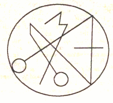
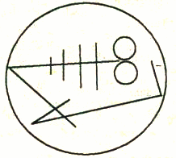
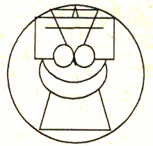
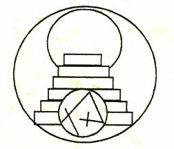
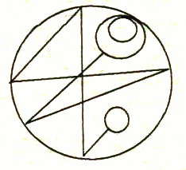
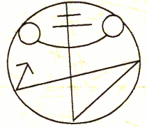

Necronomicon Throat Chakra Mediation
For maximum effectiveness, the Necronomicon meditations must be performed according to the planets. The dates and times listed below some of the meditations are given in Greenwich Time [Universal Time].
These meditations were taken from the 1586 copy of the Necronomicon.
For a full article regarding the authenticity of the Necronomicon, click here. When working with these mediations, you will find the Necronomicon is very real and very powerful. The title "Necronomicon" translates into "Book of Dead Names." This is not a book of necromancy. Only the uninitiated believe it as such, or worse, total fools believe it to be a "work of fiction," but in fact, it is a grimoire of instructions for opening the soul, using vibrations [the names]. The names are "dead" in the sense that they have not been used in thousands of years, especially with the coming of the false programs of Christianity and Islam. Unlike the many mainstream and popular methods of opening the chakras, instructed with opening from the base up [which is extremely unwise and very dangerous], this little book gives very accurate and safe methods and is even more precise and detailed with opening the chakras at their own optimal times in accordance with the planets that rule them.
The following meditation must be performed during a powerful waxing full Moon. The Moon should not be debilitated or in its sign of detriment [Capricorn] or fall [Scorpio]. This meditation is most powerful when performed with a powerful full Moon, when the moon is in its home sign of Cancer or when it is exalted in the sign of Taurus, otherwise, you will be wasting your time. The ancients knew patience in regards to power.
This meditation must be done at night and preferably directly under the light of the full Moon.
1. Sit quietly and focus on your third eye.
2. Breathe in and on the exhale, chant Nanna: N-N-N-N-N-N-N-N-AH-AH-AH-N-N-N-N-N-N-N-N-AH-AH-AH
3. It is very important to FEEL the chant in your third eye so adjust the tone accordingly.
4. Do not try to force your breathing. Feel free to take extra breaths in-between the chanting.
5. Do this 30 times.
6. Visualize your third eye with silver light projecting. The color of the Third Eye is silver
STEPS ONE THROUGH SIX SHOULD ALL BE DONE AT THE SAME TIME AND AS ONE STEP. 7. When you are finished with the vibration, meditate for a few minutes the sigil. |  |
Necronomicon Throat Chakra Mediation
DO NOT ATTEMPT THIS MEDITATION UNLESS YOU HAVE ALREADY PERFORMED IT ON YOUR THIRD EYE. It must be done on any of the dates given below. Mercury must be powerful or you will be wasting your time. Mercury should be in its home signs of Gemini or Virgo or its exalted sign of Aquarius. Never perform this meditation when Mercury is retrograde, or in the signs of Sagittarius, Pisces or Leo.
All at once:
1. Fold your hands, but extend your little fingers at the ends and connect them, all the way down, the little fingers and the Mercury mounts of your palms should be solidly connected.
2. Focus on your throat chakra and visualize it as a spinning blue vortex.
3. Breathe in energy directly from the full Moon into your throat chakra
4. Chant/vibrate "NEBO” on the exhale. You need to adjust your pitch to *feel* it in your throat chakra. Chant this with one long exhale.
N-N-N-AY-AY-AY-B-B-B-B-OH-OH-OH-OH
Chant this 12 times, while focusing on your throat chakra and holding the mudra with your hands. This mediation should be performed under the waxing full Moon, when Mercury is most powerful.
| 5. When you are finished with the vibration, meditate for a few minutes on the sigil. VARIATION: I had much success with chanting “NINNGHIZHIDDA.” Thoth [Ninnghizhida] rules the throat chakra of communication. My advice is to choose whichever chant you feel attracted to. |  |
Necronomicon Heart Chakra Meditation
DO NOT ATTEMPT THIS MEDITATION UNLESS YOU ARE ALREADY IN THE PROGRAM AND HAVE USED IT FOR YOUR OTHER CHAKRAS [THIRD EYE, THROAT].
Primary Meditation:
Perform the primary meditation when Venus is powerful. Venus is powerful when in her home signs of Taurus and Libra and when exalted in Pisces. Never perform this meditation when Venus is retrograde or in the signs of Scorpio, Aries, or Virgo.
1. Focus on your heart chakra
Breathe in energy and visualize it lighting up with white light. "Her color is purist white."
3. On the exhale, drop your head so you can feel the vibration in your heart chakra, but not tight, just resting and vibrate/chant Inanna: “E-E-E-E-E-E-N-N-N-N-A-A-A-A-A-H-H-H-H-H-N-N-N-N-N-A-A-A-A-H-H-H-H-H.”
4. Do this exactly 15 times.
| When you are finished with the meditation above and the following meditation, meditate on this sigil for a few minutes. |  |
Secondary Meditation: There are two steps to this meditation, given this chakra is a stepping off point and connector for the higher and lower chakras and its symbol is the symbol of water merging with fire- originally the Gebo rune. Astaroth/Inanna rules this chakra.
1. Go outside under the full Moon when it is at its brightest [preferably].
2. On the inhale, breathe in and visualize shining liquid silver energy from the Moon going into and brightening your heart chakra. This energy looks like liquid Mercury and is in a stream from the Moon.
3. On the exhale, drop your head so you can feel the vibration in your heart chakra, but not tight, just resting and vibrate/chant Inanna: “E-E-E-E-E-E-N-N-N-N-A-A-A-A-A-H-H-H-H-H-N-N-N-N-N-A-A-A-A-H-H-H-H-H.”
4. Do this exactly 15 times.
The very next day, go out under the Sun and do the same as the above, this time using liquid gold energy:
1. Go outside under the Sun when it is at its brightest [preferably].
2. On the inhale, breathe in and visualize shining liquid gold energy from the Sun going into and brightening your heart chakra like white- gold.
3. On the exhale, drop your head so you can feel the vibration in your heart chakra, but not tight, just resting and vibrate/chant Inanna:
“E-E-E-E-E-E-N-N-N-N-A-A-A-A-A-H-H-H-H-H-H-N-N-N-N-N-A-A-A-A-H-H-H-H.”
4. Do this exactly 15 times.
Necronomicon Solar Chakra Meditation
DO NOT ATTEMPT THIS MEDITATION UNLESS YOU ARE ALREADY IN THE PROGRAM AND HAVE USED IT FOR YOUR OTHER CHAKRAS [THIRD EYE, THROAT AND HEART].
This meditation should be done during the day and preferably directly under the Sun between the hours of 10 am and 2 pm [14:00] when the Sun is at its most powerful. The Sun is at its most powerful when in its home sign of Leo, or when it is in its exalted sign of Aries. The only other exception here is the Summer Solstice when the Sun enters 0 degrees of the sign Cancer. Never perform this meditation when the Sun is in Libra, or Aquarius.
1. Fold your hands. Now, straighten only your ring fingers so they are touching. The rest of your fingers remain folded.
2. Focus on your solar plexus chakra and visualize it spinning. Make sure it is aligned properly, point up.
3. Breathe in energy from the Sun into your solar chakra
4. On the exhale, drop your head so you can feel the vibration in your solar chakra and vibrate "Shamash." S-S-H-H-H-H-H-AH-AH-AH-AH-M-M-M-M-M-AH-AH-AH-AH-S-S-H-H-H-H
5. Do the above inhale and exhale with vibration 20 times.
| When you are finished with the meditation above, meditate on this sigil for a few minutes. |  |
2013
March:
The Sun is exalted in Aries from March 20th at 11:03 through April 19th at 22:04
July:
The Sun is at home in Leo from July 22nd at 15:57 through August 22nd at 23:03
Necronomicon Sacral Chakra Meditation
DO NOT ATTEMPT THIS MEDITATION UNLESS YOU ARE ALREADY IN THE PROGRAM AND HAVE USED IT FOR YOUR OTHER CHAKRAS [THIRD EYE, THROAT, HEART, AND SOLAR CHAKRAS].
This meditation should be done at night, when Mars is most powerful. Mars is powerful when in its home sign of Aries, when it is in its co-ruling sign of Scorpio, or when it is in its exalted sign of Capricorn. Never perform this meditation when Mars is retrograde, or in the signs of Libra, Taurus, or cancer. Check your local times for exact planetary alignments.
1. Focus on your sacral chakra. Breathe energy into this chakra and on the exhale, drop your head so you can feel the vibration in your solar chakra and vibrate "NERGAL." N-N-N-AY-AY-R-R-R-G-G-G-AY-AY-L-L-L Be sure to roll your R's
2. Do the above eight times.
| When you are finished with the meditation above and the following meditation, meditate on this sigil for a few minutes. |  |
2013 March: Mars is in its home sign of Aries from March 12th at 06:27 through April 20th at 11:49
Necronomicon Crown Chakra Meditation
This meditation should be performed when Jupiter is powerful. Jupiter is at its most powerful in its home sign of Sagittarius, its co-ruling sign of Pisces, or its exalted sign of Cancer. Never perform this meditation when Jupiter is retrograde, or in the signs of Gemini, Virgo, or Capricorn.
DO NOT ATTEMPT THIS MEDITATION UNLESS YOU ARE ALREADY IN THE PROGRAM AND HAVE USED IT FOR YOUR OTHER CHAKRAS [THIRD EYE, THROAT, HEART, SOLAR AND SACRAL CHAKRAS].
1. Focus on your crown chakra. Breathe energy into this chakra and on the exhale, vibrate "MARDUK" M-M-M-AH-AH-R-R-R-TH-TH-TH-OO-OO-OO-K-K-K Be sure to roll your R's. The K is guttural and made as a soft hacking sound in the back of the throat.
2. Do the above ten times
| When you are finished with the meditation above and the following meditation, meditate on this sigil for a few minutes. |  |
2013 – 2014
June:
June 26th at 01:41 through July 16th 2014, Jupiter is exalted in Cancer
Necronomicon Base Chakra Meditation
This meditation should never be performed when Saturn is retrograde, or in Aries, Leo, or Cancer.
DO NOT ATTEMPT THIS MEDITATION UNLESS YOU ARE ALREADY IN THE PROGRAM AND HAVE USED IT FOR YOUR OTHER CHAKRAS [THIRD EYE, THROAT, HEART, SOLAR, SACRAL AND CROWN CHAKRAS].
1. Focus on your base chakra. Breathe energy into this chakra and on the exhale drop your chin to your chest and vibrate "NINIB" N-N-N-N-E-E-E-E-N-N-N-E-E-E-B-B-B-
2. Do the above four times
| When you are finished with the meditation above and the following meditation, meditate on this sigil for a few minutes. |  |
BACK TO MAIN POWER MEDITATION PAGE
© Copyright 2010, 2012, Joy of Satan Ministries;
Library of Congress Number: 12-16457